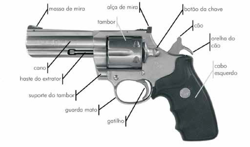
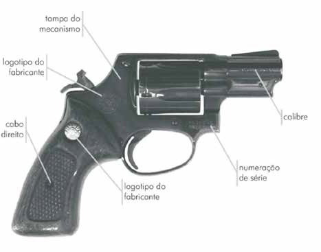
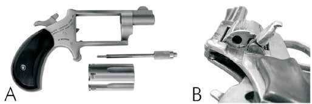
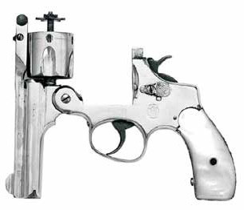
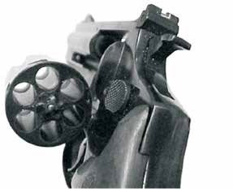
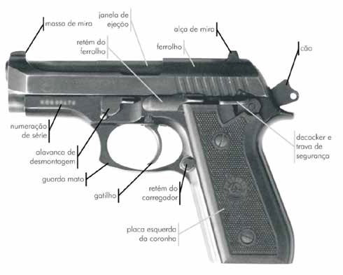

Concebidas originalmente como “armas portáteis de defesa individual, para o tiro a curta distância, preferivelmente à queima roupa”, as armas curtas de porte sofreram profundas alterações estruturais desde sua invenção no início do século XVI até os dias de hoje. Muito embora estas armas apresentem diversas variações com relação ao calibre, matéria de manufatura e mecanismos de ação, conservam ainda algumas características fundamentais:
Tais características permitem que as armas curtas de porte sejam facilmente transportadas, manuseadas e escondidas, o que as torna de uso preferencial, tanto para policiais quanto para meliantes. Entre os exemplares mais utilizados e conhecidos encontram-se os revólveres e as pistolas.
O revólver é uma arma de fogo de porte, que apresenta um sistema de repetição não automático. Dada à relativa simplicidade de seu mecanismo de disparo e à robustez de construção, o revólver é uma arma que tolera abusos mais severos que outros tipos de armamento, em especial os semiautomáticos, mantendo, em condições desfavoráveis, o mesmo tipo de rendimento que em condições normais. A característica marcante do revólver é a de possuir, para um único cano, várias câmaras de combustão, as quais estão dispostas paralelamente em um cilindro perfurado, denominado tambor. No momento em que o gatilho é acionado, o mecanismo de disparo alinha uma nova câmara, por meio da adequada rotação do tambor, com o cano e o percussor. Tal mecanismo de disparo confere ao revólver algumas características notáveis:
O revólver é constituído de quatro partes principais: armação, tambor, cano e mecanismo. A armação é a peça que constitui o corpo da arma e na qual são afixadas, montadas ou articuladas as demais peças do revólver. Além de dar uma forma anatomicamente correta para o uso pelo atirador, a armação traz em si os elemen tos de identificação impressos pelo fabricante (logotipo, origem do armamento e, principalmente, a numeração de série). Dessa forma, a armação é a única peça da arma que não pode ser substituída nos revólveres. De acordo com o tamanho da armação, os revólveres são classificados em pequeno, médio e grande. O tambor é a peça que serve de receptáculo para os cartuchos de munição que a arma pode conter, sendo responsável, quando impulsionado pela ação do atirador sobre o gatilho, pela alimentação de cartuchos íntegros para efetuar disparos. As câmaras possuem o diâmetro e o comprimento adequados para receberem cartuchos com o calibre nominal da arma. O cano tem por função receber o projétil da câmara de combustão e conduzi -lo para a direção determinada pelo atirador. Em sua parte posterior, ele é liso e possui uma estrutura denominada cone de forçamento, responsável por receber o projétil, logo após este ter saído da câmara de combustão, diminuindo-lhe o diâmetro e conduzindo-o para a parte anterior do cano, o qual possui o sistema de raias. Nesta segunda parte do cano, o projétil recebe rotação em torno de seu eixo longitudinal, o que lhe dará estabilidade giroscópica em sua trajetória até o alvo. O mecanismo é o sistema mecânico composto pelos mecanismos de disparo, repetição e segurança, os quais funcionam solidariamente e são responsáveis pela utilização da força muscular do atirador para acionar a arma. Constituindo as peças móveis do revólver, delas depende o correto funcionamento do revólver como arma de repetição não automática. A seguir são apresentadas figuras com a nomenclatura externa das partes dos revólveres.

vareta do extrator
Figura 31 – Nomenclatura das peças externas do revólver (Foto: Marcelo Jost).

Figura 32 – Nomenclatura das peças externas do revólver (Foto: Marcelo Jost.)
Os revólveres podem ser classificados, em função de sua variedade de estrutura e funcionamento, em diversas categorias distintas: quanto à armação, quanto ao mecanismo de disparo, quanto à percussão, quanto à extração e quanto ao funcionamento.
A armação dos revólveres pode ser rígida ou articulada. Nos revólveres de armação rígida, a introdução de cartuchos íntegros no tambor é feita, um de cada vez, por meio de uma janela lateral. A extração dos estojos percutidos também é efetuada por essa janela, introduzindo-se uma vareta pela parte frontal da câmara. A armação rígida pode ser inteiriça ou desmontável. Esse tipo de armação não é obsoleta e encontra aplicação na atualidade, especialmente em revólveres de grande calibre, em que um tambor reversível comprometeria a integridade estru tural da arma.

Figura 33 – Revólveres com armação rígida: (A) com tambor removível e (B) com janela lateral
(Fotos: Eduardo Makoto Sato). Nos revólveres de armação articulada, existe um extrator único para todas as câmaras, com extração simultânea de todos os cartuchos ou estojos, mediante acionamento da vareta do extrator, posicionado à frente do tambor e em seu eixo. Os revólveres de armação articulada podem ser ainda subdivididos em revólveres de armação de junta e revólveres com tambor reversível. Nos revólveres de armação de junta, também denominados revólveres de armação basculante, o cano e o tambor articulam-se com a armação, como uma peça única, por meio de uma charneira ou dobradiça, localizada na parte súpero-posterior, próximo à alça de mira, ou na parte ínfero-anterior, à frente do guarda-mato. Quando se realiza o basculamento do conjunto tambor-cano, o extrator é acionado, extraindo automática e simultaneamente todos os estojos ou cartuchos que estejam no tambor.

Figura 34 – Revólver com armação de junta (Foto:
Marcelo Jost) Nos revólveres de tambor reversível, a armação é um quadro inteiriço e rígido, ficando o tambor montado em um suporte que se articula com a armação, per mitindo que ele seja projetado para fora desta em um arco. Uma vez o tambor fora da armação, a vareta do extrator é acionada pelo atirador, a qual extrai simultaneamente, mas não de modo automático, todos os cartuchos ou estojos. Quando dentro da armação, de modo a manter o perfeito alinhamento das câmaras de combustão com o cano, o tambor pode encaixar-se a esta apenas na parte posterior, em um sistema denominado aferrolhamento simples, ou na parte posterior e na anterior, em aferrolhamento duplo.

Figura 35 – Revólver de tambor reversível (Foto:
Eduardo Makoto Sato).
Quanto ao mecanismo de disparo, os revólveres podem ser de movimento simples ou movimento duplo. Os revólveres de movimento simples são denominados de ação simples quando o cão precisa ser manualmente engatilhado antes de se efetuar o disparo por meio de acionamento do gatilho. Por outro lado, os revólveres de movimento simples são denominados de ação dupla quando o cão não fica imobilizado na posição engatilhada, devendo o atirador, por meio de pressão no gatilho, deslocar o cão para a retaguarda, a cada disparo que desejar efetuar, sendo um sistema característico de revólveres com cão escamoteado. Os revólveres de movimento duplo são assim denominados em função de que seu sistema de disparo funciona indiferentemente em ação simples ou ação dupla, ou seja, tanto o cão pode ficar na posição engatilhada, requerendo uma ação simples do atirador para efetuar o disparo, quanto pode ficar na posição de descanso, requerendo uma ação dupla do atirador para efetuar o disparo.
Quanto à percussão, os revólveres podem ser classificados como de percussão extrínseca, obsoletos na atualidade, e de percussão intrínseca. Os revólveres de percussão intrínseca podem ser subdivididos em:
Como explicado anteriormente, a percussão intrínseca pode ser direta, se o pino percussor está ligado diretamente ao cão, de modo fixo ou oscilante, ou indireta, se o cão transfere a energia de percussão por meio de um pino percussor flutuante alojado na armação.
Quanto à extração, conforme já explicado, os revólveres podem ser classifi cados como de extração manual, podendo esta ser simples ou simultânea, ou de extração automática, sendo esta última apenas simultânea.
Quanto ao funcionamento, os revólveres, em sua imensa maioria, são armas de repetição. Não obstante, existem exemplos de revólveres semiautomáticos.
O advento do cartucho de munição, no qual estão todos os elementos necessários para efetuar um disparo, a qualquer momento desejado, não somente tornou possível o aparecimento de armas de retrocarga e repetição efetivamente práticas, como também possibilitou o aparecimento das armas semiautomáticas e automáticas. O princípio do funcionamento das armas automáticas e semiautomáticas, dentre as quais se incluem as pistolas, é o do aproveitamento dos gases gerados na detonação da munição para efetuar a ciclagem da arma, realimentando-a com nova munição e preparando-a para um novo disparo. A diferença entre as armas automáticas e semiautomáticas é que nas primeiras, os disparos serão ininterruptos até o instante em que o atirador parar de pres sionar o gatilho ou não houver mais munição íntegra disponível na câmara de combustão, enquanto nas semiautomáticas, cada tiro deverá ser precedido de acionamento do gatilho por parte do atirador. Dada a pequena capacidade de carga, leveza do armamento e alta cadência de tiro, não existem razões práticas para transformar uma pistola semiautomática em automática, muito embora isso seja possível e, em alguns modelos comerciais, seja um acessório de fábrica. Assim sendo, a grande maioria das pistolas comerciais é semiautomática. A pistola semiautomática é, basicamente, constituída por quatro partes: armação, carregador, cano e ferrolho. A armação, confeccionada em materiais diversos, como aço, ligas de alumínio e polímeros, serve de suporte ao cano e ferrolho, na parte superior, e de receptáculo ao carregador, no interior da coronha. Com exceção do pino percussor, no caso de pistolas de percussão indireta, ou do cão-percussor, no caso das pistolas de percussão direta, todo o mecanismo de disparo fica alojado no interior da armação. O carregador é usualmente uma peça separada da arma, constituindo-se de um tubo oco, confeccionado de materiais diversos (aço, polímeros, etc.), e utilizado com o fim de armazenar a munição que será apresentada na ciclagem da pistola. Suas dimensões e capacidade variam conforme o projeto da pistola e o calibre da munição. O cano é por onde os projéteis são expelidos, sendo constituído, na parte posterior, por uma câmara de combustão desprovida de raiamento, à qual a munição chega, a partir do carregador, por meio de uma rampa de acesso. Sua porção central possui alma raiada e a parte anterior pode ou não ter uma massa de mira. O ferrolho é uma peça móvel que desliza nas fases de recuo e recuperação de um disparo, em trilhos ou ranhuras, com o objetivo de efetuar a correta cicla gem da arma. Seu peso e a força da mola recuperadora são balanceados de tal forma que a força de recuo, gerada pela combustão da carga de propelente da munição, seja a exata necessária para efetuar a ciclagem de modo adequado. O ferrolho pode conter o bloco da culatra, sendo um sistema cão-percussor em pistolas de percussão direta, ou percussor retrátil e sua mola retratora em pistolas de percussão indireta. Abaixo segue figura com a nomenclatura externa das partes das pistolas.

Figura 36 – Nomenclatura das peças externas da pistola (Foto: Marcelo Jost).
As pistolas, do mesmo modo que os revólveres, devido à sua diversidade de estrutura e funcionamento, podem ser classificadas, de diversos modos: quanto ao funcionamento, quanto à montagem do cano, quanto à percussão e quanto ao mecanismo de disparo. Quanto ao modo de funcionamento, embora a maioria das pistolas seja originalmente semiautomática, há pistolas que de fábrica são automáticas e outros que ilegalmente são convertidas para automáticas.
Quanto ao funcionamento, as pistolas são classificadas em pistolas de culatra desaferrolhada e pistolas com a culatra aferrolhada. Pistolas com culatra desaferrolhada são, de modo geral, as de menor calibre e de potência relativa menor, como nos calibres .22”, .25” e .32”. Nessas armas, o que recua após a deflagração da carga de propelente, por pressão dos gases, é apenas o estojo, cuja base está apoiada contra a culatra. Assim, o conjunto for mado pelo bloco da culatra, ferrolho e estojo é empurrado para trás, seguindo-se a ejeção do estojo e da continuação do processo de ciclagem por ação da mola recuperadora. As pistolas de culatra desaferrolhada podem ainda ser classificadas em pistolas com recuo livre e pistolas com recuo retardado. Pistolas com culatra aferrolhada são aquelas com grande potência de tiro ou de grande calibre (9 mm, .40” e .45”). O objetivo do aferrolhamento consiste em retardar, até o momento ótimo, a abertura da culatra. Caso essa abertura seja prematura, as pressões no interior do cano serão muito elevadas e, em tal caso, a extração e a ejeção do estojo se dariam com extrema violência, colocando em risco o atirador e diminuindo a eficiência do disparo. A solução encontrada para isso foi atrasar o momento da abertura da culatra mediante o artifício mecânico de utilizar parte da força de recuo no esforço de desaferrolhá-la. Durante o processo de desaferrolhamento, a culatra permanece firmemente fechada, iniciando sua abertura apenas após a completa expulsão do projétil pelo cano. Esse sincronismo assegura que a pressão interna já tenha sido reduzida a níveis seguros, garantindo tanto a eficiência do disparo quanto a proteção do atirador. O desaferrolhamento da culatra pode ocorrer por meio de tomada de gases ou por recuo do cano.
Quanto à montagem do cano, as pistolas são divididas em duas categorias:
Quanto à percussão, as pistolas são divididas, do mesmo modo que os revólveres, em pistola de percussão direta e percussão indireta. Pistolas de percussão direta são aquelas que não possuem cão, pois este é o próprio pino percussor, o qual se constitui de uma peça cilíndrica, terminada em um cone de percussão em sua parte frontal, possuindo uma noz ou ressalto em sua parte ínfero-posterior, utilizada para mantê-lo armado, e que fica alojada dentro de um tubo no bloco da culatra. Quando a arma está engatilhada, o gatilho imobiliza o percussor na posição armada por meio de um calço que se encaixa na noz. O pino percussor é mantido seguro pelo calço do gatilho e sob tensão de uma mola até que, por ação do atirador, o gatilho é pressionado, ocorrendo o desencaixe do calço com a noz, liberando o pino percussor para percutir a munição que se encontra na câmara de combustão. Exemplos desse tipo de percussão podem ser encontrados nas pistolas da marca Glock, todas de percussão direta em ação simples, e na pistola Walther modelo P-99, a qual possui percussão direta em ações simples ou ação dupla. Pistolas de percussão indireta são aquelas que possuem cão. Muito embora elas também possuam um pino percussor, este é inerte e fica permanentemente posicionado na posição de retração, por meio de uma mola, somente sendo acionado mediante pancada desferida em sua parte posterior por meio de um cão convencional. As pistolas Taurus, que possuem cão, são exemplos desse tipo de percussão. As pistolas também podem ser classificadas em pistolas de percussão central ou pistolas de percussão radial, do mesmo modo que os revólveres, em função do tipo de munição utilizada.
Quanto ao mecanismo de disparo, as pistolas podem ser classificadas de modo semelhante aos revólveres, ou seja, pistolas de movimento simples, que pode ser com ação simples ou ação dupla, e pistolas de movimento duplo.